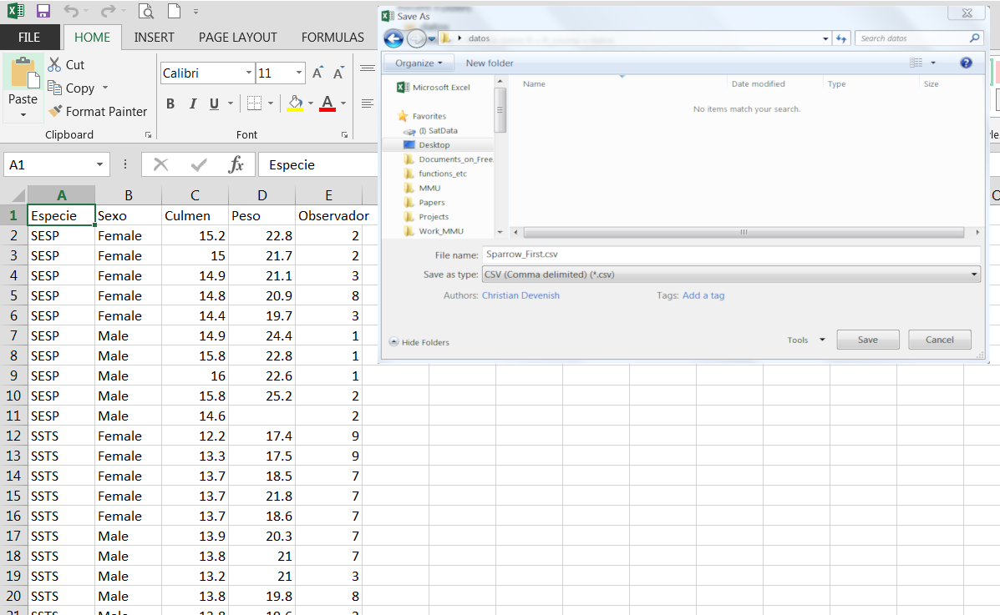

3. Data frames - introducción
knitr::opts_chunk$set(echo = TRUE)El Data frame - una “tabla” en R
Podemos pensar en el data frame como una colección de vectores del mismo largo
v1 <- c(5,2.5,3,10,5)
v1
s1 <- c("a", "b", "c", "d", "e")
s1
df1 <- data.frame(Tipo = s1, Valor = v1)Es un objeto básico para almacenar datos
df1 # A la izquierda se muestra el número de filaImportar datos a R
Directamente desde el teclado usando lo que ya vimos
v1 <- c(...)
- Lento
- Normalmente tenemos los datos en otro programa, como excel.
- Incluso, es más fácil ingresar datos en otro programa
Importar desde excel
Tenemos un ejemplo como este:
Die Vogel : Handbuch der Systematischen Ornithologie. Volume 1
Preparar los datos en excel 1
Formato
- Una variable por columna
- Una observación/ un caso/ sujeto, etc., por fila
- Primera columna - identificador de casos
Primera fila - nombre (código) del variable - recuerda criterios para nombrar los vectores, es decir:
- Sin espacios
- Sin palabras reservadas, nombres de funciones
- No usar simbolos como: ? $ % ^ & * ( ) # ? < > / | \ [ ] { }
- No muy largo (después tienes que escribir estos nombres)
Llenar con NA donde no hay datos (opcional)
Chequear los datos antes de importarlos
Ojo con caracteres especiales como # o “ en campos de texto
Borrar columnas y filas vacias aledañas a los datos (a veces quedan “restos” en filas y columnas que han tenido datos anteriormente)
Guardar como texto (.csv)
Guardar como texto


Importar con read.csv()
Función básica para importar datos como un data frame
df1 <- read.csv("Sparrow_First.csv") # OJO establecer directorio de trabajo primero o pon ruta completa
# por ejemplo
# df1 <- read.csv("C:/Documentos/Datos/Sparrow_First.csv")
head(df1) # mirar los primeros 6 líneas
str(df1) # mirar la estructura del data frame